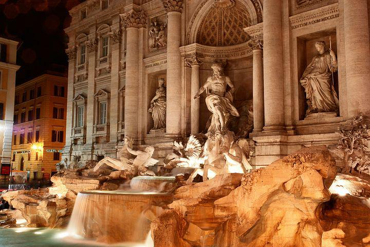
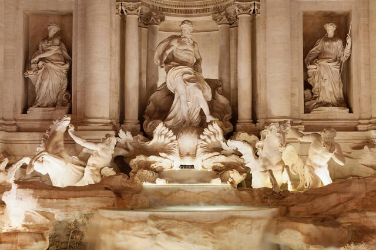

|
En el lugar exacto donde se encuentra actualmente la Fontana de Trevi, una vez estuvo una fuente más pequeña, que data del siglo XV. El primer dibujo de la fuente data de 1410. Presentaba una sola pila rectangular y una pared de mármol donde el agua brotaba de tres puntos diferentes en forma de máscara.
En 1732, el Papa Clemente XII organizó un concurso de arquitectos para diseñar una nueva fuente en el sitio. Los arquitectos tenían total libertad con la estructura y no había reglas específicas. El ganador del concurso fue Nicola Salvi, un arquitecto fuertemente influenciado por el famoso Gian Lorenzo Bernini (el diseñador de la Plaza de España). La construcción de la fuente comenzó en 1732. Desafortunadamente, Salvi no pudo ver los resultados finales de sus esfuerzos ya que murió once años antes de la finalización de la fuente (1762). Tras la muerte de Salvi, la construcción continuó bajo la dirección de Giuseppe Pannini y, más tarde, del escultor Pietro Bracci. La fuente fue construida detrás del Palazzo Poli, por eso a menudo se la reconoce como parte de este edificio.
La fuente fue construida en estilo barroco. Este estilo se puede reconocer por su exuberancia y opulencia. Bernini hizo un antiguo diseño original de la fuente y fue encargado por el Papa Urbano VIII después de encontrar la fuente original inadecuadamente dramática. Cuando murió el Papa, el proyecto fue abandonado por considerarse demasiado caro. Por tanto, la fuente se basa totalmente en un proyecto realizado por Salvi.

"EL TRABAJO COMENZÓ EN 1732 Y
LA FUENTE SE COMPLETO EN 1762"
|

DIOS MARINO OCEANUS CON ESTATUAS DE
ABUNDANCIA Y PODER CURATIVO
|
|